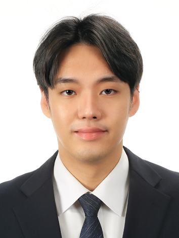

전종민
Ph.D. student, Computer Engineering, Sejong University
Building and evaluating XR systems — MR/VR interaction, 3D reconstruction, and Vision-Language Models for Virtual Agents.
Ph.D. in Computer EngineeringSejong University, Seoul, Korea
M.S. in Computer EngineeringSejong University, Seoul, Korea
B.S. in SoftwareSejong University, Seoul, Korea
Improving Group Navigation for VR-based Entertainment Applications
Entertainment Computing
혼합현실 소방훈련 시뮬레이션: HMD와 IoT 소화기를 활용한 체험학습
한국컴퓨터그래픽스학회 학술발표대회 (KCGS), 2025
현실-가상세계 연결을 통한 사용자 인터랙션
한국정보과학회 한국소프트웨어종합학술대회 (KSC), 2023
메타버스 기반 네일아트 제작 플랫폼 개발
한국정보과학회 한국소프트웨어종합학술대회 (KSC), 2022
2024년 연구개발 담당자
참여 연구원